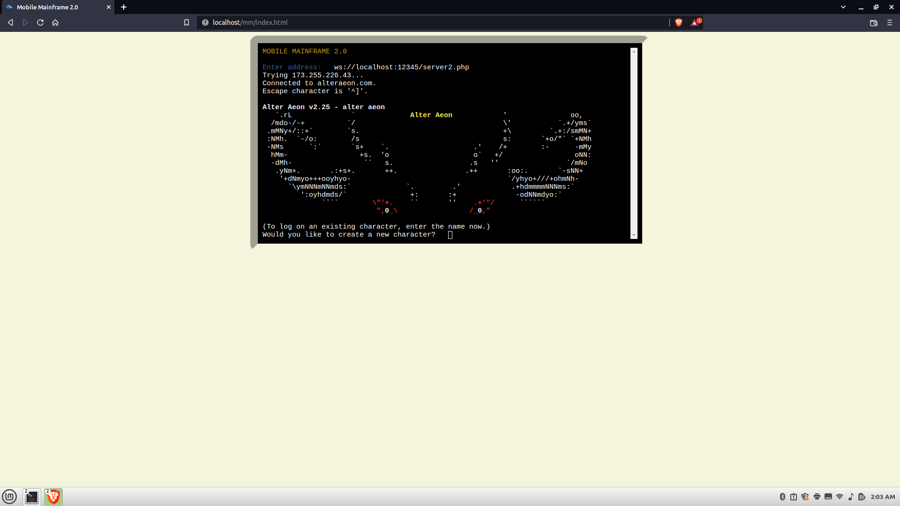

Intro
Many centuries ago, at the very Dawn of Time, when the Deep Magic was first being etched upon the Stone Table, computers were... well in a lot of ways they were very similar to how we do things today. People had devices called terminals, that didn't do a whole lot by themselves. They looked like computers, but they were more like magic doors; all they did was to send and receive messages from these massive computers called mainframes. Some of them could do some cool things on their own, fancy tricks like colors and cursor positioning, but the mainframe controlled just about everything. Everyone hooked up their machines to them, anything users typed was sent to them, and anything that was printed (on a screen or on paper - yes, the earliest models used paper) came from them.

Today, we've replaced terminals with phones and tablets, and today's version of the mainframe is what Big Tech has branded "the cloud". Our devices are capable of a lot better graphics, and our connection to this mysterious thing we call the cloud is wireless now. Yes, technology has come a long way since the Dawn of Time, and at one point were were really using all that power to its full potential... but nowadays we've kind of gone back to where our devices are just how we get in. All the good stuff is done "in the clouds".
Now I'm over-simplifying a lot - and any computer geek would agree that the analogy is a stretch - but it's kinda not (lol). Our computers are so powerful that we can run emulators in emulators. I can run an emulated C64 inside an emulated DOS box. I can run a full-on Windows computer in a web browser. We have all this power, and yet we want to store all our stuff on someone else's computer. As a result, our computers - as powerful as they are - run slow. Again, I'm oversimplifying here, but still... this shouldn't be the case. Computers today aren't really doing that much more than what computers were doing 20 years ago. Searching the web, catching up on news and stuff, listening to music, even instant messaging... all of that was easily doable 20 years ago. Videos are the only serious resource-munchers that have any right to be. But for text? It's kind of gotten out of control.
So I got to thinking, how can we lighten the load a bit? How can we still have some cool text effects and all that, but get rid of all the unnecessary junk? If we're going to use the old mainframe-style store-everything-on-a-remote-computer thing... how can we use that thing to the max? That's what this project is about.
What this is NOT
Despite its name, "Mobile Mainframe" is NOT a mainframe emulator. I don't know why you'd want one of those, much less on a mobile phone, cuz even for us retro-leving tech geeks there's just not a lot you could really do with that. Also, most mainframe systems from back then were proprietary, so even if I really wanted it to be one, I couldn't do that legally - and I'm not cool with that.
BUT: If your geek cred is higher than mine - if you
have an actual mainframe somewhere to telnet into, and you want
to have access to it from your browser... you can do that! Starting
with version 2.0, Mobile Mainframe supports the WebSockets protocol,
and comes with a PHP script where all you have to do is give it a
port number and a command (including something like
telnet yourmainframe.com 123) and bingo! You really do
have access to your mainframe from a mobile device!
What this IS
Short version: A new, lighter way to send and receive text over the web. This software includes two components:
- A server: This is where the "magic" happens. I'll explain more shortly.
- A terminal: This is what you'll use to connect to the server from your mobile device or computer.
Server setup
So the "server" is not a full-on software stack. There's no crazy convoluted containerization shenanigans going on here, just a little PHP script. But I call that script a server because it's responsible for serving your software. It works by relaying data between the client (terminal) and a program of your choice. I've tested it with vim (a text editor), language shells (GForth, Python), a game I built in standard C (with zero OS-specific dependencies), and of course, a MUD (MUDs were the video games they played back in the Dawn of Time). So PHP is just a "middle-man". I chose PHP cuz it still powers like 78% of the web, and because it's what I know best. If you want to add a server in another language, feel free to see how I did it and contribute!
To set up the server, the first thing you'll want to do is go to my "server2.php" file and edit the port number and command you want your Mobile Mainframe server to use. I've explained what's what in comments, so you should be all good there. You might need to change firewall settings and stuff though, so it might not be doable on shared web hosting.
Once that's done, the next thing you'll need to dois run it.
The commands I used in testing were:
cd /var/www/html/mobile-mainframe
php -q ./server2.php &
I won't explain what all those options are, yoou can read the PHP docs for that, but that's all you need to do on the server-side.
Terminal-in-a-browser
With xterm.js and the WebSockets API (a standard web thing), I geek-rigged my own terminal-in-a-browser. This should work on any device that supports modern web standards (not just mobile devices).
Other Terminals
Now if you want to use a real terminal (or cool-retro-term,
my favorite terminal emulator), there are tools already built
for this exact purpose. Foe example, I used websocat.
After following the instructions there, I ran the following command:
websocat --null-terminated --binary ws://localhost:12345/server2.php
Of course I had to start my server first (see the next section
for how to do that). And unlike others I tried, websocat was
surprisingly good! It worked great on most of the programs I
used for testing (Vim was not great, but I think someone more
knowledgeable about Bash than me can help find a solution to
that). But if all you want is the one for browsers, then
you're all set. You don't have to worry about any of this.
Plans for future versions
At this point, the project is in maintenance mode. If I (or you) find a bug, we can work on that. If we find it's missing something useful, we can add it. I do kinda want to phase out support for the version 1 way of doing things (over plain HTTP), just cuz if you want communications over plain HTTP that work in a terminal AND a browser... just don't use JS (lol). But it's not important that the code go without that legacy code. Now that it works, I plan to shift gears to another couple projects - the project I had in mind when I built it in the first place. :-)